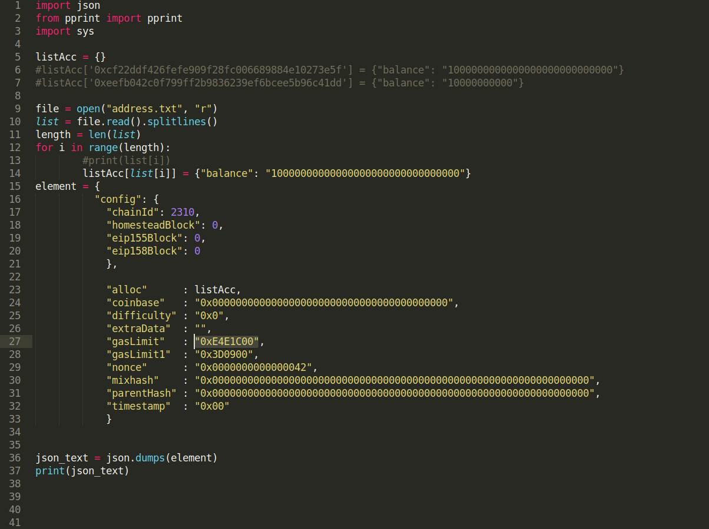
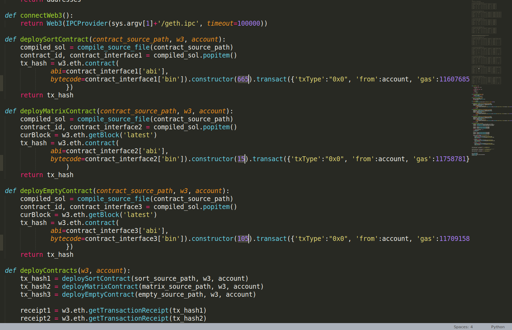
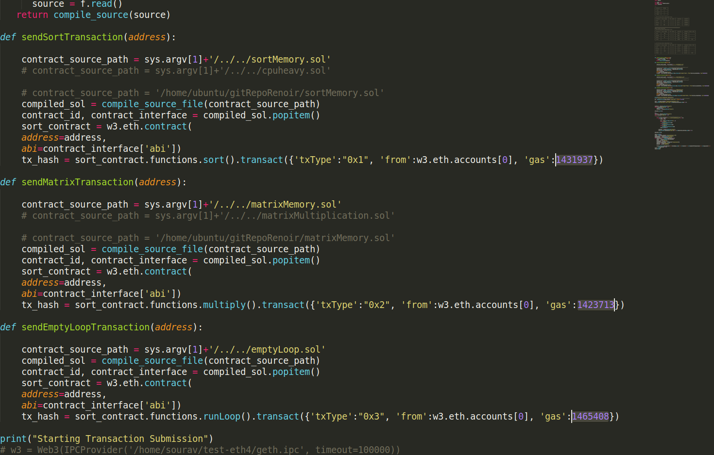

----------------------------------------------------------------------------------------
git clone https://github.com/nitinawathare/RenoirExperiment.git
git clone https://github.com/sourav1547/go-renoir.git
----------------------------------------------------------------------------------------
cd RenoirExperiment
sh installGo.sh
sh installpy3.sh
----------------------------------------------------------------------------------------

Note that gas limit in buildGenesis.py should be in gexa-decimal, We have tested the system for gas limit of 40M, 400M, 800M which gives has the block validation time of ~250ms, ~2.5s and ~5sec respectively in Ethereum for our experimetal setup.
Gas Limit Decimal
Gas Limit Hexa-decimal
3.5M
3567E0
12M
B71B00
40M
2625A00
120M
7270E00
240M
E4E1C00
400M
17D78400
800M
2FAF0800
Next, we vary the block validation time by increasing the smart contract's complexity by passing different values to its constructor, as highlighted in the image below. For example, if you are running an experiment for block gas limit of 800M, then value passed to the "sort" smart contract is 150. Detail of other values and gas limit combination is listed in the table below.
Parameters for Experiments:
A). 40 Million Block measurement time.
Contract
Dep. param
Gaslimit
Gasused
sort
15
250 k
224323
Matrix
3
250 k
244314
Empty
15
250 k
227908
B). 400 Million Block measurement time.
Contract
Dep. param
Gaslimit
Gasused
sort
145
4305255
4205255
Matrix
6
1932171
1832171
Empty
170
148003
138003
C). 800 Million Block measurement time.
Contract
Dep. param
Gaslimit
Gasused
sort
150
5.5M
5121763
Matrix
8
4.5 M
4487369
Empty
400
6.0 M
5521658
D. 12 Million Block measurement time.
Contract
Dep. param
Gaslimit
Gasused
sort
35
78002
77002
Matrix
4
58681
57681
Empty
4
77658
76658
E. 120 Million Block measurement time.
Contract
Dep. param
Gaslimit
Gasused
sort
330
684023
683023
Matrix
12
759781
758781
Empty
50
710158
709158
F. 240 Million Block measurement time.
Contract
Dep. param
Gaslimit
Gasused
sort
665
1432937
1431937
Matrix
15
1424713
1423713
Empty
105
1466408
1465408

One should change the transaction gas limit as highlighted in the image bellow and the corresponding value are listed in table A, B, C above.

----------------------------------------------------------------------------------------
cd go-renoir
git checkout Renoir_Implementation_VaryingSimilarity
make clean
make
cd ..
----------------------------------------------------------------------------------------
mv RenoirExperiment RenoirExperiment10Nodes
cd RenoirExperiment10Nodes
git checkout artifactLocalSetup
sh runExperiment.sh
----------------------------------------------------------------------------------------
cd RenoirExperiment
git checkout artifact
sh copyScripts.sh
sh installGoLocal.sh
sh downloadEVDCodeLocal.sh
sh setupEthereumLocal.sh
sh initGenesis.sh
sh runExperiment.sh
----------------------------------------------------------------------------------------
cd RenoirExperiment
cd script